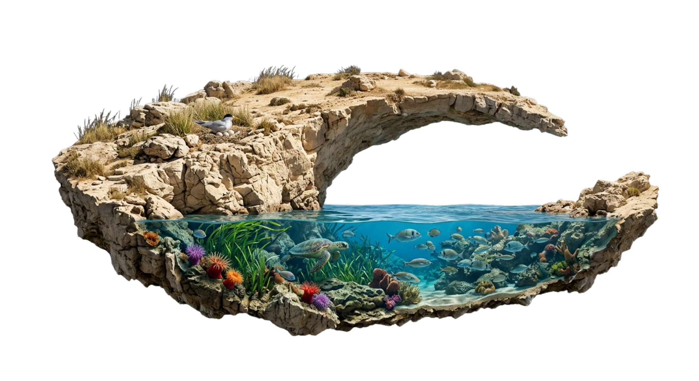
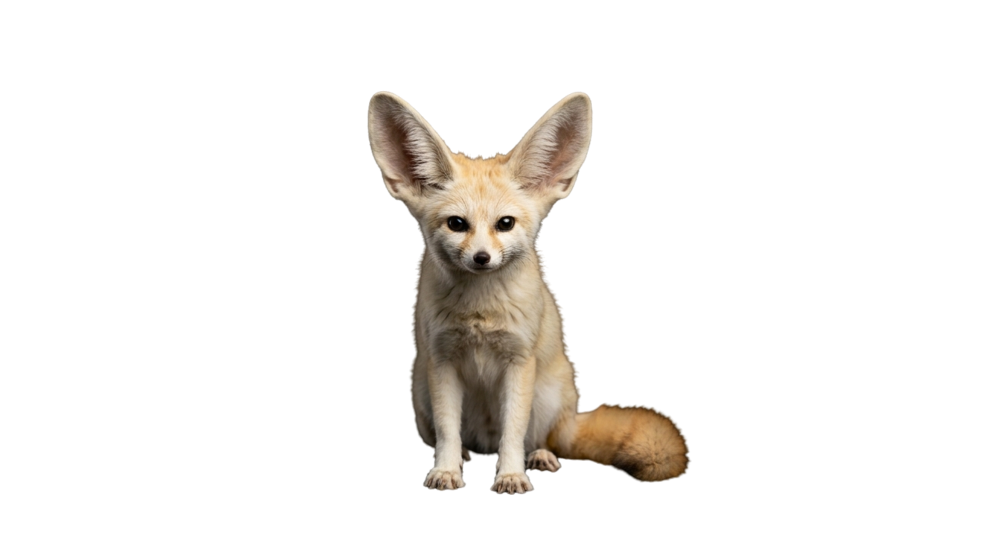

Zakher Bouragaoui
Specializing in biodiversity monitoring, ecological research, and strategic program management across North Africa — currently leading monitoring & evaluation initiatives at WWF North Africa.


One landscape, from forest to desert.
Featured
National Geographic Explorer Festival
The Tunisian Wonders project — documenting the country's biodiversity and building conservation awareness.
Watch on Vimeo →TEDx — The Soundtrack of the Wild
How monitoring the natural sounds around us can unveil hidden aspects of species behaviour and ecosystem health.
Watch on YouTube →Current Focus
WWF North Africa
M&E & Knowledge Transfer Officer
Leading the monitoring and evaluation of conservation programs and developing strategic frameworks across North Africa.
Research Interests
Bioacoustics & Machine Learning
Innovative approaches to biodiversity monitoring — using acoustic technology and machine learning for species identification.

Why listen
The natural sounds around us can unveil hidden aspects of species behaviour and ecosystem health — if we learn to listen.
Hear the story →
Education
M.S. Wildlife Ecology
University of Wisconsin–Madison · Fulbright Scholar
M.S. Evolutionary Ecology
Faculty of Sciences of Tunis
